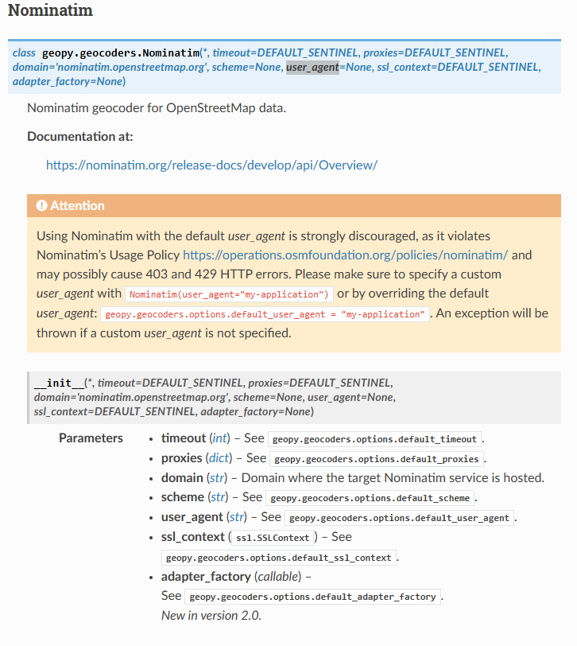
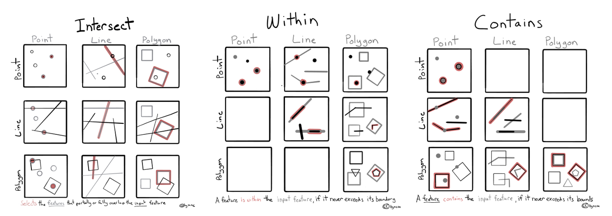
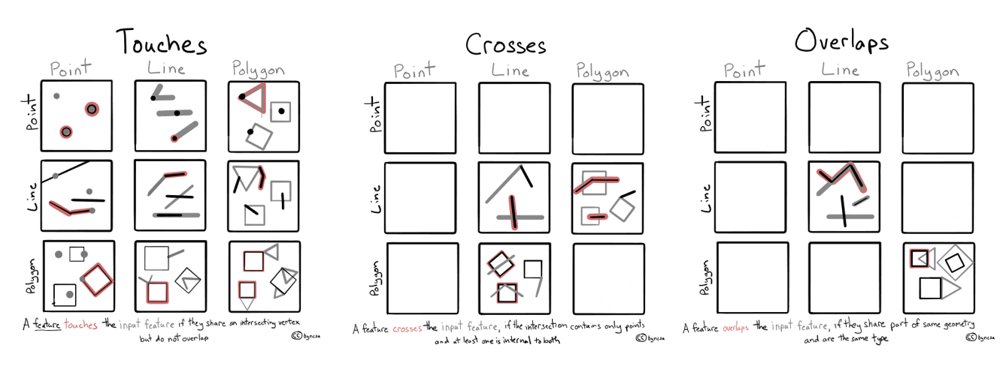
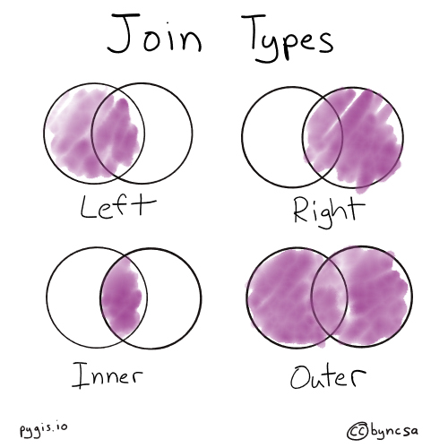

🔹 Sesión 4#
En esta sesión exploraremos el concepto de geocodificación (geocoding), que consiste en transformar nombres de lugares o direcciones específicas en coordenadas geográficas (latitud y longitud). Este proceso es fundamental para vincular datos espaciales con ubicaciones reales en un mapa.
Cabe mencionar que también estaremos trabajando dos temas en paralelo: Spatial joins y Análisis de vecinos más cercanos.
Geocodificación en Python 🐍#
En el ecosistema Python, algunas de las bibliotecas más utilizadas para realizar geocodificación son GeoPy y Geocoder. Ambas permiten convertir direcciones, ciudades o países en coordenadas geográficas mediante servicios web conocidos como geocoders.
Entre los geocoders más conocidos se encuentran:
Geocoders
Figura 1. Ejemplos de servicios que proveen servicios de geocodificación. Elaboración propia.
Actualmente existe una amplia variedad de servicios de geocodificación. Las principales diferencias entre ellos —además del modelo de precios— radican en la calidad y cobertura de sus datos. Por ejemplo, una dirección puede estar correctamente registrada en Google Maps pero no en Bing o Carto, y viceversa.
Consideraciones técnicas#
La mayoría de estos servicios requieren una API key para su uso, lo que implica que debes registrarte en sus plataformas para obtener acceso. Además, suelen establecer límites de uso, como un número máximo de peticiones por segundo o por día, lo cual es importante tener en cuenta para evitar errores o bloqueos al procesar grandes volúmenes de datos.
Para más información sobre el uso de geopy con pandas, puedes consultar su documentación oficial.
Uso de Nominatim (OpenStreetMaps)#
En esta sesión utilizaremos el servicio Nominatim, proporcionado por OpenStreetMap. Este geocodificador es gratuito y no requiere de una API key, aunque sí impone restricciones en la frecuencia de peticiones: solo se permite una petición por segundo. Puedes revisar las políticas de uso en este enlace.
Batch Geocoding
Ten en cuenta que el envío masivo de solicitudes o la repetición frecuente de la misma consulta puede considerarse uso indebido, lo que podría conllevar al bloqueo del acceso al servicio.
Una consideración importante al utilizar Nominatim es el uso del parámetro user_agent. Este parámetro es obligatorio y se utiliza para identificarnos ante el servicio, indicando quién está realizando las peticiones.

Figura 2. Documentación de Nominatim vía GeoPy.
Spatial Joins (Uniones espaciales)#
Un spatial join es una operación espacial fundamental en análisis geoespacial. Consiste en combinar atributos de dos capas espaciales en función de su relación espacial, como si un objeto de una capa “intersecta”, “está dentro de” o “contiene” a un objeto de otra capa. Esta operación es muy útil cuando necesitamos enriquecer una capa con información proveniente de otra, basándonos en su ubicación geográfica.
Por ejemplo, podríamos querer unir una capa de puntos (como estaciones meteorológicas) con una capa de polígonos (como regiones administrativas), para asignar a cada punto los atributos del polígono en el que se encuentra.
GeoPandas facilita este proceso mediante la función gpd.sjoin(), que permite realizar un spatial join. Esta función admite diferentes tipos de relaciones espaciales definidas mediante el parámetro predicate:
Tipos de relaciones espaciales
intersects: selecciona elementos que se cruzan o tocan espacialmente.
within: selecciona elementos que están completamente contenidos dentro del otro.
contains: selecciona elementos que contienen completamente al otro.
touches: selecciona elementos que tocan el borde del otro.
crosses: selecciona elementos que cruzan el otro, es decir, comparten parte de su geometría pero no están completamente contenidos.
overlaps: selecciona elementos que se superponen parcialmente, es decir, comparten parte de su geometría pero no están completamente contenidos ni contienen al otro.


Figura 3. Tipos de relaciones espaciales. Imágenes extraídas de PyGIS, bajo licencia CC BY-NC-SA 4.0.
Además, puedes especificar el tipo de unión que deseas mediante el parámetro how:
Tipos de uniones
left: conserva todos los elementos de la capa izquierda (primera).
right: conserva todos los elementos de la capa derecha (segunda).
inner: conserva solo los elementos que tienen coincidencias en ambas capas.

Figura 4. Tipos de uniones. Imágenes extraídas de PyGIS, bajo licencia CC BY-NC-SA 4.0.
Este es un ejemplo de uso tanto del parámetro how como del parámetro predicate:
gpd.sjoin(puntos, regiones, how="left", predicate="within")
Análisis de vecinos más cercanos#
Una tarea común el análisis espacial consiste en identificar el objeto más cercano a otro dentro de un conjunto de datos. Por ejemplo, podrías tener un punto que representa tu casa, y una colección de ubicaciones que representan restaurantes. En ese caso, una pregunta frecuente sería: “¿Cuál es el restaurante más cercano a mi casa?”. Este tipo de análisis se conoce como búsqueda del vecino más próximo, y su objetivo es encontrar la geometría más cercana a una geometría dada.
En Python, este análisis puede realizarse utilizando la función nearest_points() de la biblioteca Shapely, la cual devuelve una tupla con los puntos más cercanos entre las geometrías proporcionadas.
Datos#
Para esta sesión, utilizaremos un conjunto de datos en formato .txt.
ambién utilizaremos un conjunto de datos del Instituto Nacional de Estadística y Geografía (INEGI) de México, que contiene información geoespacial sobre el Marco Geoestadístico de México. Se ha filtrado solamente a Jalisco y los municipios correspondientes al Área Metropolitana de Guadalajara (AMG): Este conjunto de datos está disponible en formato shapefile:
Y, finalmente capa de Colonias de Jalisco proveniente del Instituto de Información Estadística y Geográfica de Jalisco (IIEG):
Contenidos de esta sesión#
En esta sesión estaremos trabajando con este cuaderno de trabajo:

Código compartido#
Abre este archivo y copia el código cuando la profesora te lo indique 🙏🏾